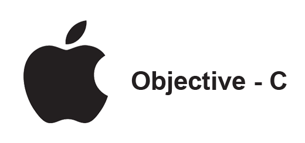

カテゴリ スマホ > Objective-C
こんな方にオススメ！
 iPhoneアプリを開発したい
iPhoneアプリを開発したい
Objective-C は C 言語の基本構造をベースにして、Smalltalk 言語を取り入れた言語であり、C++ 言語とは歴史的にも言語仕様もまったく異なる存在です。 現代の主要なオブジェクト指向言語はそのほとんどが Java 言語をベースにしたものが多く、Smalltalk を基本としている Objective-C のコードを見ると、目を丸くすることでしょう。さらに、C++ などの他の言語はクラスの実体のメモリ構造などを隠蔽するのに対し、Objective-C は C 言語を基本にクラスを実現しているため、ある程度の仕組みが C 言語から見れてしまいます。 つまり、言語仕様として新たにオブジェクト指向的性質を加えた現代のオブジェクト指向型言語に反し、Objective-C は C 言語にデザインパターンとしてオブジェクト指向のシステムを追加したという立場と考えることができます。Java や C++ では、クラス型の概念やオブジェクトの生成方法を言語仕様として定めています。 しかし、Objective-C ではクラス型や生成方法すらヘッダファイルで定義されているため、その実体は C 言語の構造体を typedef 文で隠蔽しているだけです。 C 言語に親和性が高いのは良いのですが、他のオブジェクト指向言語を習得している技術者には、受け入れがたいものがあるかもしれません。 逆に、C 言語プログラミングにオブジェクト指向をデザインパターンとして採用することを好む開発者にとっては、追加された言語仕様と基盤の仕組みがサポートしてくれるので、都合が良いかもしれません。
Objective-Cの関連本